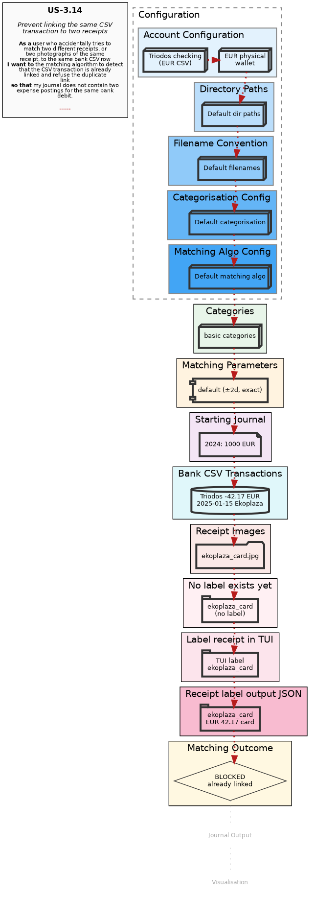

US-3.14implemented Prevent linking the same CSV transaction to two receipts
As a user who accidentally tries to match two different receipts, or two photographs of the same receipt, to the same bank CSV row I want the matching algorithm to detect that the CSV transaction is already linked and refuse the duplicate link so that my journal does not contain two expense postings for the same bank debit.
↑↓ arrows or j/k to jump between DAG nodes · click a node to seek · space to play/pause
DAG Diagram

Current layer: —
Matching Flow
The matching algorithm tries to find a CSV transaction for each receipt. Retry outcomes loop back for another attempt; terminal outcomes end the flow.